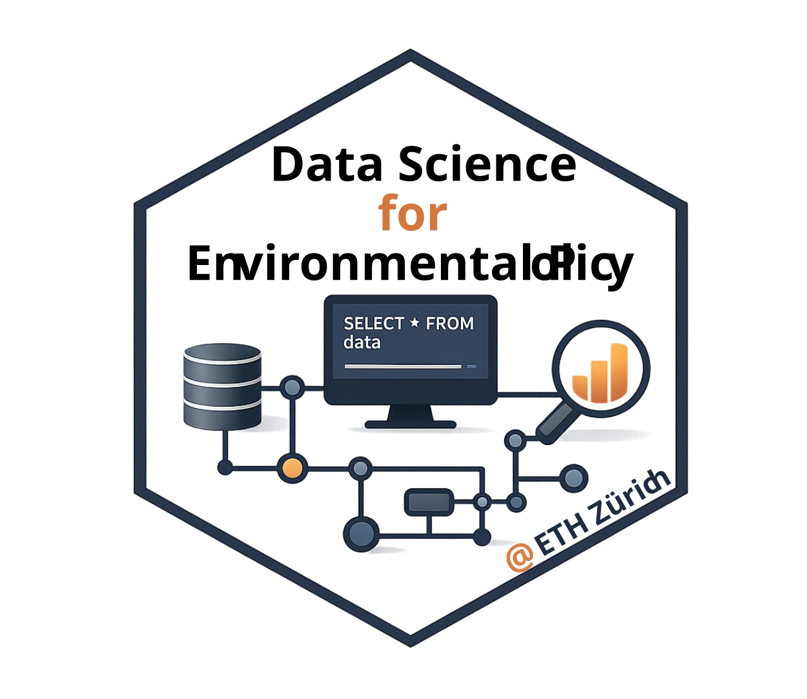

Data Science for
Environmental Policy
Fall 2026 • ETH Zurich • D-USYS • 6 CP
This course examines how algorithms and data infrastructures increasingly shape environmental decision making and governance. Students learn quantitative approaches for accessing and working with a diversity of real-world data types, assess environmental and social impacts of digital systems, and critically evaluate when data-driven approaches can support, or hinder, sustainable and equitable decision-making.
course modules
[1] The politics of planetary scale data
Technical goals: Find, access, and analyze large spatial datasets; build reproducible, cloud-native geospatial workflows.
Conceptual goals: Trace how biodiversity data shape biodiversity policy; interrogate data infrastructure through the lenses of history, power, and data justice.
[2] The promise and perils of algorithmic environmental governance
Technical goals: Formulate and test simple optimization problems; compare static optimization, dynamic adaptive decision making, and reinforcement learning.
Conceptual goals: Interrogate how objectives, constraints, and trade-offs encode values; evaluate algorithmic decisions through the lenses of ethics, transparency, and equity.
[3] Policy documents and public discourse as data
Technical goals: Collect, clean, and explore large collections of policy text; use LLMs and computational text analysis to identify patterns across policy documents and public discourse.
Conceptual goals: Examine how language turns environmental ambitions into policy commitments; interrogate whose priorities and perspectives become legible in official and public discourse.
[4] From intervention to impact: causal inference for evaluating environmental policy
Technical goals: Turn causal questions into testable research designs; use difference-in-differences, event studies, and matched designs to estimate impacts.
Conceptual goals: Interrogate the assumptions behind causal claims; compare competing identification strategies and distributional outcomes.
[5] The environmental costs of compute
Technical goals: Identify and evaluate evidence about the energy, water, land, and material demands of digital infrastructure.
Conceptual goals: Examine infrastructure siting, extraction, and who bears the environmental costs of the digital economy.
scroll →
For more info, see the full
syllabus page.
Please review
Tech Setup before the first class.